Chefs
Silent Barn is cooperatively directed by over 70 volunteers. We call ourselves "chefs" and
really use too many cooking metaphors to describe "The Kitchen", our volunteer
community
…[read more]
Chefs run our events calendar. Chefs fix our sinks. Chefs run our meetings (...we have a
lot of those). Chefs manage our insurance policies and process our accounting. Chefs
write our grants and lead fundraising. Chefs live at Silent Barn and create in stewdios
at Silent Barn. Chefs built this website.
Chefs at Silent Barn report their work to the group at large, and make decisions together.
There is no hierarchy here. Is it crazy to run such a huge project without a "boss"?
Definitely. But we do it anyway, and we think there's something important about a community
struggling and learning together.
Here are some of the Chefs that make Silent Barn possible.

Andrew Jeffrey Wright
Andrew Jeffrey Wright is a founding member of Philadelphia's Space 1026 art collective. His works include painting, animation, drawing, collage, photography, sculpture, video, installation, screen printing, zines and performance. Andrew and his performance partner, Rose Luardo, have hosted the comedy performance night, Comedy Dreamz, at The Silent Barn several times in the past 3 years. During his residency for the months of September, May and June, Andrew will be creating video and performance work, and drawing a lot.
links: http://andrewjeffreywright.tumblr.com/archive https://www.youtube.com/user/thenewdreamz/videos https://instagram.com/andrewjeffreywright/
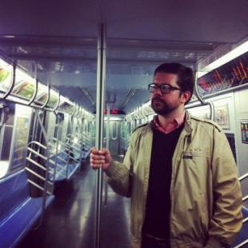
Brandon Zwagerman
Chef
Community Outreach Coordination Chef
Sous Chef
Public Calendar Sous Chef // - Assist PR Chef in keeping public events calendar up-to-date
Ghost
Outreach Octopus
Working Groups
Outreach
Info
Born: Holland, Michigan
Resides: Ridgewood, Queens
Likes: Bikes, public transit, cemeteries, public space, civic engagement, intimate performances, history, geography, urbanism, wandering, plants, lofi/garage/pop/folk/punk/Motown, maps, the beach, baseball, pizza, World's Fairs
I'll write a real bio at some point
Past Chef Roles
Public Meetings Chef
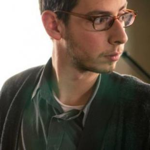
Carlos Hernandez
My name is Carlos Hernandez. I am a musician. As Gravesend Recordings, my partner Julian and I record sounds in the North Garage at Silent Barn.
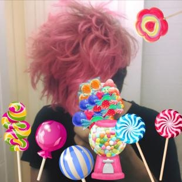
Carlos Salas
brown, artist, punk, anarcha, immigrant, intersectional, they/them, survivor
Eli is an editor, producer, and arts organizer. He works to develop and maintain Silent Barn's building as a member of the Deep Space working group and manages the budget for physical infrastructure projects. He is also a proud Octopus, sharing information and ideas across the Silent Barn community.
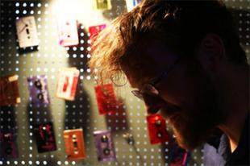
G Lucas Crane
G Lucas Crane has been creating tape collage music for over a decade, publishing under the solo moniker Nonhorse, and collaborating in groups such as Woods, Ogg Myst, and Wooden Wand and the Vanishing Voice. The stairwell leading to the second floor residences is covered in the hand-decorated cassettes used for audio collages, and from Crane's personal collection.
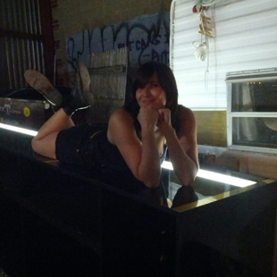
Ginny Benson
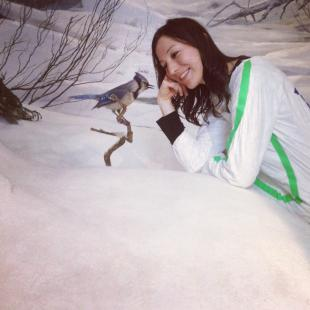
Hillary Reeves
Hi, I am Hillary the fundraising chef and membership coordinator at Silent Barn.
I build interactive and participatory environments with the help of friends, the public, and museums. Most of my work incorporates elements from the art studio at the American Museum of Natural History, and the collaborative DIY spirit of The Silent Barn, where I volunteer and advocate for collectivity.
Joe Ahearn lived at the Silent Barn for almost 4 years before the new chapter began and has been organizing shows for awhile before that. He now lives at The Ho_se, which has shows in it's backyard and basement all the time.
During the day he works as the Performance and Installation Curator at The Clocktower Gallery. In addition to exhibits and events, he hosts a radio show with Ginny Benson called Jam Sandwich, along with a slew of other radio programs. He also worked as the Managing Director for SHOWPAPER for almost 6 years. He maintains a blog about his exploits and interests called Learning The Hard Way.
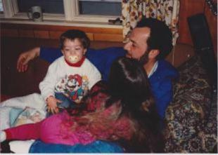
Jordan Michael Iannucci
Jordan Michael Iannucci began working at Silent Barn in 2009 when he founded the DiTKO! Zine Library. He is a promoter and publisher under the name JMC Aggregate and works as Silent Barn’s accountant. Jordan spends most of his time listening to shows through his floor as he watches professional wrestling.
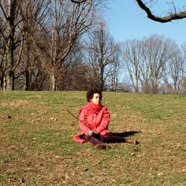
Keba Robinson
Keba Robinson is a musician from Pennsylvania by way of California. Over the years her interests have spanned writing, being within spaces of creative activity, science and making art. After working on a string of DIY projects with friends she joined the Barn in 2016. These days she works as the Barn Coordinator and collaborates with a range of working groups to keep the space functioning on a daily basis.
Kegan is a musician, audio engineer and songwriter from Portland, Maine. He works in the recording studio as one half of 1989 Recordings in addition to hosting and running sound at shows. His own artistic endeavors include (but are not limited to) playing in his band Journalism, producing immaculate electropop and co-writing musicals. CHILL.
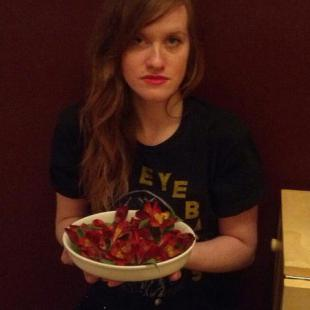
Lani Combier-Kapel
Lani Combier-Kapel drums and sings in the brooklyn bands ADVAETA and Warcries. At Silent Barn, she manages the booking calendar and co-runs a band t-shirt consignment shop called Merch & Destroy. She and Mike Sheffield also run Gingercore Booking.
advaeta.bandcamp.com, warcries.bandcamp.com
Liz Pelly is a writer, editor, show-booker, Silent Bar-tender, zine librarian, and sometimes drummer who cares a lot about digital media literacy, punk feminism, and writing in her diary. She lives on the second floor of the Silent Barn where she is usually transcribing interviews, answering one million Silent Barn emails, or working on The Media, the bi-weekly ad-free web-paper she co-edits.
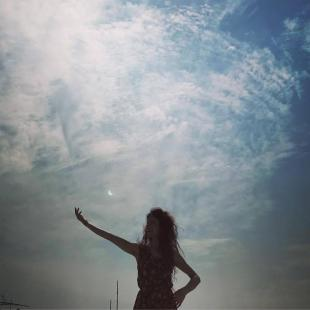
Lizzie Connor
Lizzie is a musician and educator committed to anti-racist, anti-gentrification community building. She writes folky / playful / melancholy songs on guitar and banjo, and occasionally plays the accordion. At Silent Barn, she helps run the grassroots youth movement and performing arts program, Educated Little Monsters, as well as its creative hub and recording studio, The Lab. She's the Director of the nonprofit We Make Noise, which sponsors both ELM and The Lab as well as the week-long summer program NYC Rock Camp. She's a sucker for everything analog and acoustic, but sure does love a good spreadsheet.
Mike is the Web Chef at the Barn and oversees all open source software development throughout. He works as the Chief Software Architect at TeachBoost, very rarely writes in the blog ParticleBits, and is a strong privacy and digital-rights activist currently living in Manhattan.
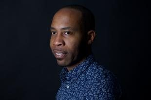
Mike Lawrence
Mike Lawrence is a chef in the Risky Bizness working group that is dedicated to examining all legal and liability issues for Silent Barn. He has participated in two Silent Barn Public Meetings (moderating one) concerning legalizing DIY. Mike occasionally books shows and guest DJs at the space. He has been Silent Barn's lawyer since 2013 and has advised other DIY spaces in Brooklyn.
Outside of Silent Barn, Mike practices business and entertainment law at Lawrence Law. He represents musicians, record labels, film production companies, promotion firms, management companies, and other small businesses. He is a former college radio disc jockey and can send you copies of his broadcasts upon request.
http://mikelawrencelaw.com/
https://www.youtube.com/watch?v=DgukPPRzIV8&t=6s
Nat Roe
Nat Roe is a co-founder of the new Silent Barn location, which he's lived in since we started up, and was a resident of our prior space too. Nat works as the Executive Director of the Barn's bosom buddy, Flux Factory, a collectively directed space hosting residencies, exhibitions & educational programs.
As a sound collagist, Nat has DJed at WFMU for many years, in addition to several publications. Nat's sound collage finds a middle ground between the turntablism of DJ Screw, DJ Clue and Dancehall radio norms and with the cut-up appropriation and electroacoustic mess of Christian Marclay or Ake Hodell. Listen at www.wfmu.org/playlists/nr.
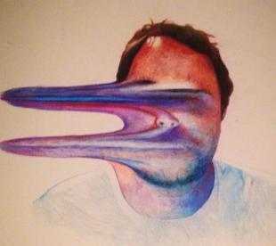
Nathan Cearley
Nathan Cearley is a school teacher, weird electronics musician, event organizer and Dark Cloud chef at Silent Barn. When he was five he was attacked and nearly killed by a great dane.
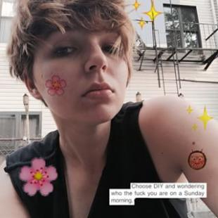
Nina Mashurova
Nina is a calendar chef in the shows working group, where they curate, facilitate, and run shows, and generally work to maintain and improve shows infrastructure. Their shows are archived at Katy Perry Research Institute.
Outside of Silent Barn, neon is a music and culture writer covering the intersection of arts and activism, cyborgs, community and identity. They also make zines exploring these same topics in an abstract way, play sounds, organize events, and occasionally remember to archive these things at @neonsigh and neon-hq.tumblr.com
NM was a Silent Barn Artist in Residence from 2013 - 2014.

Reilly Shellito
Reilly is a queer musician/poet/artist from Akron, OH, affiliated with acts such as The Bijous, Peking Saint, Volition Spears, We Came From Asia, Dead Kids, and Juggler. Is currently petting a cat in Brooklyn, NY.
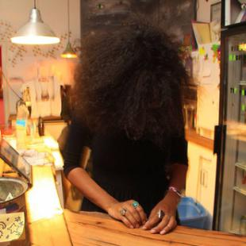
Stephanie Griffin
Like a tumbleweed, Stephanie blew in from the great and mighty New Mexican desert. We kept her.
Past Chefs
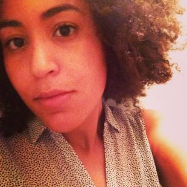
Alexandra Bynoe-Kasden
Alexandra is the Family Events Chef, responsible for bringing child-friendly and educational programming to the Barn. She is a born-and-bred Brooklynite and loves to sing and tell stories. Mama to one (cute lil' dude), mama to all!
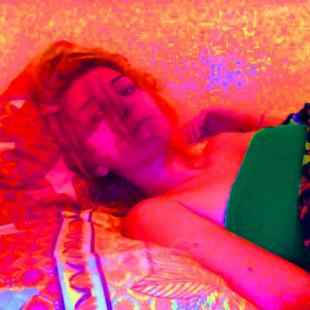
Alison Sirico
Role(s)
QWOP (Chef)
Bushwick Art Community Liaison (Sous Chef)
Group(s)
Chefs of Chefs
Outreach
Stewdio
Big Law Country Club (Chef)
Neighborhood
Break Room
Info
Past Chef Roles: Newsletter, Meeting Chef, Volunteers, Panel Moderator
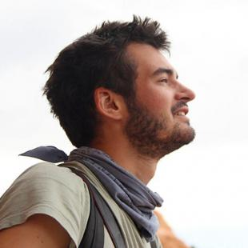
Andrew McFarland
Andrew McFarland is a photographer, producer, and facilitator who currently resides at the Silent Barn. Over the past three years he has criss-crossed the United States producing Folk to Folk, a documentary project exploring how the inclusive spirit of folk music inspires participatory communities, and, more recently, the Story Store, an interactive story-telling exchange.
As the Photo Chef and an Outreach Sous Chef he uses visual media and events to engage the public with the Silent Barn’s collective and creative environment. Andrew can be found running shows and overseeing the Hawkitori IRL Salon for Conversations of Greater Gravity and Sanity Preservation at the Silent Barn. During the day he works as a global producer at Slideluck.
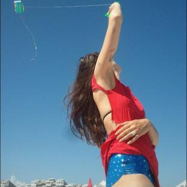
Arielle Avenia
Arielle has worked approximately 45 jobs in NYC over the past 3.5 years. Check out her insane shitty name-dropping CV for the full list of projects and employment history
She likes being a connector between people and objects, getting stuff for free, rice milk, riding bikes, and sewing.
Arielle lives 4 blocks from Silent Barn and needs approximately 5 clones (or 10 monkey butlers and a clone dedicated to training them) to manifest all of her ideas.
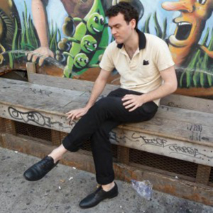
Charles Reinhardt
Charles Reinhardt is an MPA student at NYU Wagner studying public and non-profit finance. He does financial and budget analysis for Silent Barn. His writing has appeared in Maclean’s, Jacobin, Hazlitt, The Barnes & Noble Review, Christian Science Monitor and Vol. 1 Brooklyn.
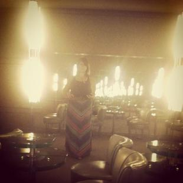
Chrissy Reilly
Chrissy Reilly is a business consultant and creative director for photographers, fine artists and musicians as well as an aspiring artist and designer. She holds her MFA in Fine Art from The City College of New York. Currently, she lives in Brooklyn NY with her boyfriend and their two dogs, Buddy and Batman: The Movie: The Dog. She is the former VP Creative and Operations Director of WIN-Initiative a boutique photo agency and has worked as a designer and creative director on many publications including WiNK, VAR, and was US Content Editor for UK based Applejuice Magazine. She has been invited to lecture at SVA, ICP and City College. The highlight of her career thus far is being able to inspire photographers, artists and musicians and help them advance their careers albeit it through donating
her time to review portfolios, organize career building events, how to build better business practices, and lecture on how to make a living through the arts.
Chrissy can often be found in the Silent Barn’s South Garage creating art or jewelry for her own hand-made line WAXTHEDUCK. At The Silent Barn, she is currently the Art Co-Chef, Newsletter Sous Chef and Stewdios Sous Chef.
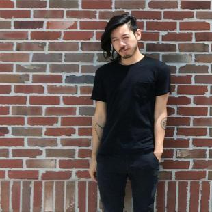
Christopher J Lee
Chris is a freeschool instructor, zine-maker, and PhD candidate in postcolonial literature. He’s led classes on apathy, astrology, and queer theory, and promotes education programming at Silent Barn. His summer residency organizes a weekly course on intersectional activism, exploring the intersections of race, class, gender, and disability analysis.
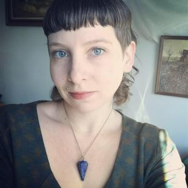
Dandy Dextrous
A southern queer pisces hailing most recently from Richmond, VA. They are a co-founder of Girls Rock! RVA, activist, writer, performer and queer community organizer. They love to illustrate flyers for friend's shows, co-create rad queer spaces for creative collaboration, cook in cast iron, sew and reclaim traditionally feminized roles into southern gothic space traveling dyke heathenry. During their residency, they will do per-zine writing/illustration, host queer potlucks in the Phoenix Room, draw so many flyers, help with gardening, talk to their plants and try really hard not to bring home any cats. Check out their newest venture Ambient Spell Performances as Death Witness and Zine On The Fire Escape: For when yr burning from the inside out.
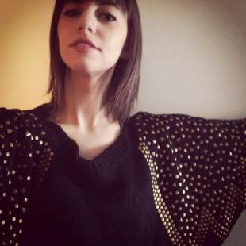
Dara Hirsch
Dara is an audio engineer who works as half of 1989 Recordings. She also started DATADATA Productions, where she does mixing, audio editing, and sound design. If she seems sluggish, administer 33.8 fluid ounces of seltzer.

Em Boltz
Boltz is a queer musician and poet currently residing in room 2L. They are associated with music and multimedia acts such as The Bijous, We Came From Asia, and Crayon. They are interested in sustainable living, creating music, writing, zine-making, and astrology and will probably ask if they can read your chart.
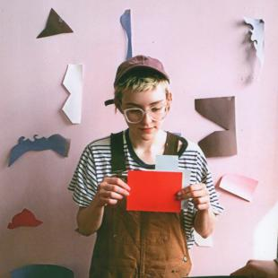
Emily Sprague
emily sprague is a gemini (not in the bad way) who likes forests and fruit, writes and records music under the name florist, builds things out of wood, and makes graphic art.
florist.bandcamp.com
mle-sprg.tumblr.com

Emma Reaves
Emma Reaves is a Brooklyn based artist/performer. She is an ensemble member and co-artistic director for THE NY NEO-FUTURISTS, writing/directing/performing in their critically acclaimed on-going weekly show TOO MUCH LIGHT MAKES THE BABY GO BLIND. Emma is also an ensemble member of Psychic Readings, creating performances alongside fellow maniacs Ric Royer and G Lucas Crane.
www.emmareaves.com
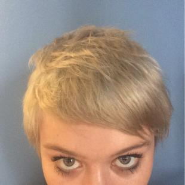
Gabriela Tully Claymore
Gabriela is a writer and editor from San Francisco, CA who has called New York home for the past 4+ years. She is an avid dabbler, and enjoys writing poetry, making music as Cadet Kelly, talking tarot, hanging at the beach, doodling, and riding bikes with friends. She is a proud co-founder of Silent Barn's House Of Gemini (alongside Emily Sprague), and can often be spotted at the gig -- come say what's up!
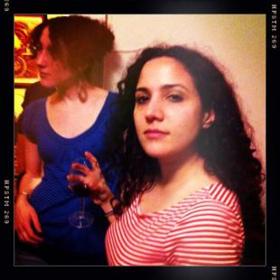
Genan Zilkha
Genan Zilkha is the Employment Chef and a member of Risky Bizness, the working group at Silent Barn that focuses on minimizing liabilities. She’s moderated two public meetings (with more to come) about legal issues affecting the Silent Barn community. During the day she’s a litigation attorney and works at a small law firm.
Jackie Du joined the Silent Barn crew one evening in November of 2012 in a dark basement with minimal seating (she remembers mostly that there was pizza and at least one cat). From there Jackie helped develop the Stewdios program and today she is involved in the facilitation of Public Art at Silent Barn. Jackie also teaches drawing and painting to school aged children.
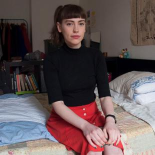
Johanne Swanson
Johanne [yo-HUN-ah] is a resident and curator of 603^ above The Silent Barn where she also participates in the residency and safer spaces working groups. She is currently finishing a full-length album entitled "Patientness" to be released with Orchid Tapes in 2016. Before Brooklyn, Johanne lived in Berlin, Germany, and her hometown of Eau Claire, Wisconsin.
https://soundcloud.com/yohuna
yohuna.tumblr.com
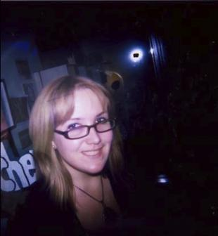
Julia Lipscomb
Julia Lipscomb is freelance writer, grad student, and zine enthusiast. She contributes to the Silent Barn as the Fundraising Chef, managing individual donations and putting the “fun” in fundraising campaigns.
Outside of Silent Barn, she studies Arts & Cultural Management at Pratt Institute. Her non-profit arts background goes back to The Vera Project and Zine Archive & Publishing Project in Seattle, where she’s from. Julia tries to stay very active in the zine community, publishing zines, giving presentations, teaching workshops on zines, and working open hours in the ABC No Rio zine library.
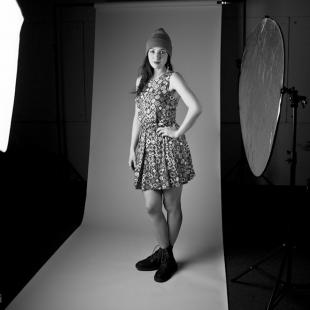
Julie Malice
Julie Mallis has exhibited her paintings, installations and video art nationally in Philadelphia, Pittsburgh, New York City and the San Francisco Bay Area. Her work investigates perception, imaginary worlds and the relationship between music and art. She is a graduate of Carnegie Mellon University where she received her degree in Electronic Time Based Media and Anthropology. Mallis completed a Flight School Fellowship in 2014 through the Pittsburgh Center for the Arts / Pittsburgh Filmmakers. She is the co-founder of BOOM Concepts Art Space in Pittsburgh and is a 2014-2015 artist-in-residence at The Silent Barn.
www.juliemallis.com
Photo Credit: Ohad Cadji
Katie McVeay
Works at Hear.Say Press / Silent Barn / Moving Image & Content
Attended St. John's University
Lives in Brooklyn, NY
Larissa Hayden
Larissa Hayden is a master organizer of people, information, and experiences, but mostly she works to make all the things she wished existed, but don’t yet.
In addition to being Silent Barn’s Risky Bizness Octopus, she runs a booze-fueled history lecture series called The Society for the Advancement of Social Studies, creates single subject blogs, and plans rambunctious events.
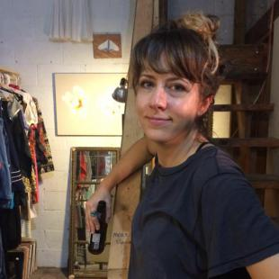
Lauren Wolchik
Silent Barn Artist in Residence 2015. Mood Maker.
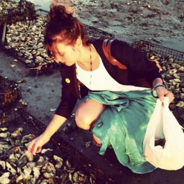
Lorissa Rinehart
Lorissa Rinehart is a writer, curator, activist, and the Founder of the Center for Strategic Art and Agriculture. She is also the current Programs Manager at apexart, an arts and education center in Tribeca. Previously, she was Operations and Accounting Coordinator at Global Cultural Asset Management, a museum consultancy firm founded by Director Emeritus of the Guggenheim Foundation Thomas Krens. Lorissa got her start in the arts as the Development Associate at the Clocktower Gallery, a non-profit art center founded by Alanna Heiss, Director Emeritus of PS1 MoMA Contemporary Art Center. Before her career in the art world, Lorissa worked for numerous social justice organizations tackling issues from child labor to union democracy and from anti-nuclear proliferation to food justice. You can contact Lorissa at info@thecsaa.org.
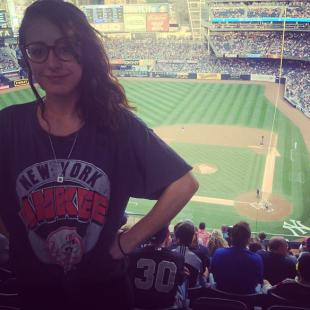
Margaret Croft
Chef
BIG PICTURE Chef
Working Groups
Chef of Chefs Development
Past Chef Roles
Grants
Info
I'm really into research and organizing spaces. Also, picture books. I work at a children's book store.
I'm interested in alternative concepts, sites, and configurations of home & the domestic.
Also, feminist home-makers & maintenance work.
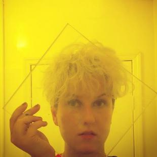
Martha Moszczynski
Martha Moszczynski (b.1982, Detroit) joined Silent Barn as a studio resident in 2013. Rooted in painting, her multivariate practice embodies muraling, site-specific installation and sculpture. Defined by confetti-like palettes detonating into sprawling, emotionally chaotic compositions, her work obscures boundaries between catharsis and distress.
main website
marthamoszczynski.com
news
http://marthawebpresence.com/

Megan Manowitz
Megan is a writer, show-booker, zine-maker, conceptual party planner, bartender and resident of the Silent Barn. She also does PR and is in the safer spaces working group.
Interests include: birthdays, basketballs, blue / green / red / yellow. Outside, astroturf, my notebook. Nice pens. Low vibrations from dance parties felt from bed. The sounds my cat makes. Cow print, checkerboard print, stripes. Lots of stripes and turtlenecks. Stretching, "yes," "thank you," i love you
website: http://0202ff.com
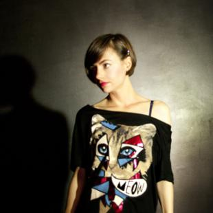
Melissa F. Clarke
Clarke is a member of the Silent Barn web team, and has organized shows and events. She is now heading the sound improvement of the Manhattan room.
Melissa is also a resident where she works on interdisciplinary art employing data and generative self-programmed compositional environments.
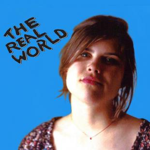
Mila Matveeva
Mila Matveeva is a photographer, producer, and curator working in the arts community and film/teevee. She currently resides and grew up in Brooklyn, but it’s kind of complicated. She enjoys dark movie theaters, live music, and making things happen.
Mila helps Silent Barn Shows with booking, logistics and rentals and is open to anyone incorporating her given name into real and make believe band names.
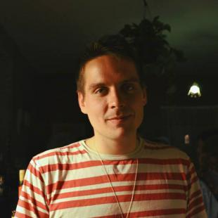
Nicholas Cummins
Current Grants Chef at Silent Barn, has a background in nonprofit fundraising and political organizing. Nicholas joined Silent Barn as a volunteer in July 2013 and focuses on consulting with artists to source funding opportunities while expanding foundational support for Silent Barn as a whole.
Hi! i'm Noah. I spew ideology and clean up nicely. Some of my projects include fmly fest, the ny + la art book fair, friends first fest, and cuddle formation. Sometimes I make jokes on the silent barn twitter. I live above the barn in 603 upstairs so come over, bring tea, and let's be friends

Quinn Moreland
Quinn is a culture writer and budding ceramicist. Before moving to the Silent Barn she attended Bard College where she created BUMP (Bard United Music Place), a centralized organization and communication system for the school's music venues. She also helped co-crete Bard’s Safer Spaces Policy. Quinn lives in 2L and aims to make the apartment into a creative, comfy zone. She currently writes for sites like Pitchfork, Hyperallergic, The Fader, and elsewhere.
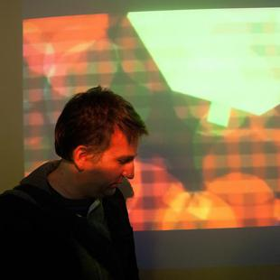
Robin Enrico
Robin is the curator of the Ditko! ‘Zine Library at the Silent Barn as well as the creator and organizer of the Paper Jam Small Press Festival. As a chef at the Silent Barn he is responsible for the Silent Barn youtube channel as well as the Silent Barn tumblr. He has self published his own comics since 2003. More information on all Robin’s projects available at www.robinenrico.com
Ryan Soper (member of BRAT PIT) is an artist living and working in Queens and Brooklyn, NY. Sculptor, sound/video artist and "eco" product designer. Guided by the technological optimism of the 90's, shaped by the Utopian futurist of the 60's and 70's and restrained by the fragility of the human flesh in the present. Soper is drawn to systems that revolve around the body and how they can influence the production of music.
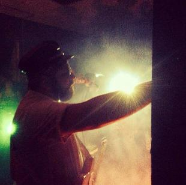
Ryan William Downey
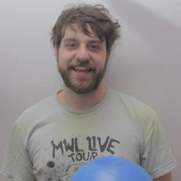
Shane Suski
Co-owner and chief mechanic of The Canned Ham.
Security Chef and rat whisperer.
Freelance camera operator and production assistant.
Lover of travel and prosecco.
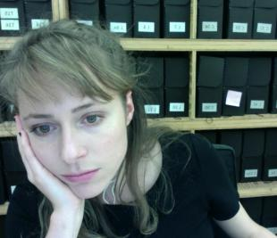
Sidney Russell
Sidney is an artist working with performance, sound, installation and drawing, often collaborating with people or groups outside of the art world on site-specific happenings. She also writes about art and is editor of TheHighlights.org.
Stephanie Orentas
You can find Stephanie teaching young Bushwick artists for Casa Experimental, working behind the counter at Other Music, managing media and communications for Writing On It All, and taking photos at shows for Impose Magazine. She is also on the internet at www.stephanieorentas.com.
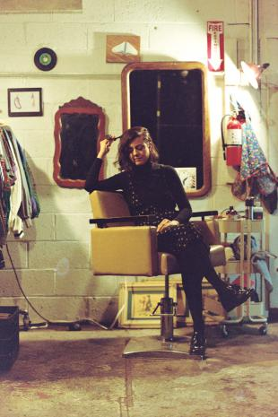
Stonie Clark
Stonie owns and runs Bad Seeds, Silent Barn’s in house vintage clothing/barber shop. Licensed in cosmetology for 11+ years with a MA in Cultural Anthropology, she opted to open a shop out of her love for art/rock n roll & distrust in capitalism. She provides vintage clothes, critical discussion, and haircuts at a sliding scale.

Tali Stern
Tali lives on the 3rd floor of the Barn in the practice space also known as 603 upstairs. She helps out with the residency program and with Safer Spaces and is the queen of resetting the boilers that live in the basement. If you need her you can find her working behind the bar or deep in a music-making, cat-petting, astrology hole. Tali holds open astrology office hours 24/7 basically, so please contact tali dot stern at gmail dot com to make an appointment.
Vanessa Castro
Vanessa organizes and curates exhibitions and shows at Silent Barn via Big Law Country Club. Her day job involves working for the exhibition departments of MoMA PS1 and BRIC. Besides spending her time at art non-profits, she writes, watches movies, and makes art and music.
Studio Profile: Vanessa co-directs Big Law Country Club, Silent Barn's installation space for emerging artists. Sometimes the Barn lets her paint on their other walls too.
Yaman Palak
Yaman Palak joined The Silent Barn collective in 2012 and started co-managing the Shows team. He’s the Staffing Chef and can be found running sound.
Yaman Palak, is a musician based in Queens NY. As a performer, guitarist, singer, songwriter, composer, he creates music that bends stylistic boundaries. In line with his multicultural heritage, Yaman’s music encompasses eclectic influences and yet still delivers a captivating idiosyncratic elegance. Inspired by the people that work and play at The Silent Barn, he is performing with his self-titled solo project as well as with the Brooklyn band DUH.
soundcloud.com/yamanpalak